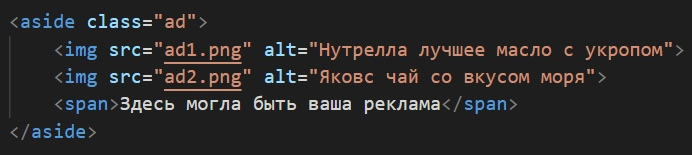

Обзор элементов
⟨div⟩
Элемент ⟨div⟩ является, пожалуй, самым универсальным блочным элементом.
При этом у него нет полноценного самостоятельного значения — он предназначен для группировки контента,
который семантически никак не связан между собой.
Использовать ⟨div⟩ нужно осторожно — он не имеет смысла для скрин ридеров.
Настоятельно рекомендуем обращаться к элементу ⟨div⟩ только в крайнем случае,
когда больше никакие другие элементы не подходят!
Элемент ⟨div⟩ чаще всего используется как контейнер для других элементов

⟨section⟩
В отличие от ⟨div⟩, тег ⟨section⟩ применяется к общим разделам контента,
который может быть сгруппирован семантически.
Главное правило: элемент ⟨section⟩ уместно использовать только тогда,
когда его содержимое явно указывается в структуре. Например, в качестве раздела.
В силу того, что содержимое тега ⟨section⟩ имеет семантическую общность — «тему» — её необходимо указать с помощью заголовка.
Часто «тема» указывается сразу после открытия тега:

⟨article⟩
Тег ⟨article⟩ ещё более уточняющий и конкретный, чем тег ⟨section⟩.
Он так же применяется к семантически связанному блоку контента и должен иметь заголовок.
Его содержимое должно быть независимым и самодостаточным — это, своего рода, отдельная статья.
При изолировании содержимого тега ⟨article⟩ от остальной части страницы должны сохраняться его смысл и законченность.
Чаще всего тег ⟨article⟩ применяется к статье на сайте, отдельной новости, посту блога, сообщению форума или комментариям:

⟨aside⟩
Тег ⟨aside⟩ тоже применяется к блоку для семантического указания раздела. Но у него есть важное отличие от ⟨section⟩ или ⟨article⟩:
он представляет блок контента, отношение которого к содержимому документа косвенное или вообще отсутствует.
Тег ⟨aside⟩ независим (буквально, в стороне) от остального контента.
То есть, он может быть вырван из одной страницы и вставлен в другую и при этом не потеряет свою актуальность.
Чаще всего ⟨aside⟩ применяется для боковых панелей, блоков с рекламными баннерами,
сносок и другой информации, которая отделена от основного содержимого страницы:

Комбинирование элементов
Теперь рассмотрим ключевые особенности объединения этих элементов вместе.
⟨article⟩ в ⟨article⟩
Элементы ⟨article⟩ можно вкладывать друг в друга. При этом они по-прежнему остаются самодостаточными.
Предполагается, однако, что содержимое внутреннего ⟨article⟩ связано с содержимым внешнего.
Например, если в посте блога содержится цитата из другого поста — она может быть «обёрнута» в свой ⟨article⟩:

⟨article⟩ в ⟨section⟩
Подобным образом несколько тегов ⟨article⟩ можно «обернуть» в ⟨section⟩.
Например, так можно поступить на странице блога, где отображаются последние сообщения.
Контейнером для всех постов будет тег ⟨section⟩, а каждый такой пост обособляется тегом ⟨article⟩:

⟨section⟩ в ⟨article⟩
Возможен и обратный вариант, когда каждый тег ⟨article⟩ может иметь один или даже несколько тегов ⟨section⟩.
Например, эта статья, если была бы частью страницы, могла бы быть размечена так: